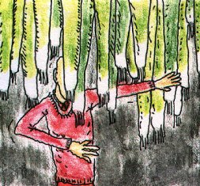

Friday, September the 24th, 2010
back to: title, date or indexes
After that little interruption we return to our alphabetic schedule with L. And as with G, L is a double bill, for L stands for both Lettuce and Leeks.
According to the BBC, there was much amusement recently when police in Hampshire released an e-fit picture of a burglary suspect who appeared to be wearing a lettuce on his head.
What has gone unremarked is the possibility that the image may be devastatingly accurate, and that it is the habit of burglars and other ne'er-do-wells in the Hampshire area to sport the makings of salads upon their bonces. It would not surprise me if some urban folklorist, attached perhaps to a polytechnic, was at this very moment preparing a monograph on, say, the radish-wearing footpad of Gosport, or the Winchester Watercress Rascal.
A wider range of vegetables has been used by miscreant scamps in the past, of course, though for hiding behind rather than wearing openly upon the head. Six long years ago here at Hooting Yard we dealt, in passing, with the case of the chap who skulked under cover of a serried array of leeks hanging from a ceiling.

It just goes to show that sooner or later the so-called “real world” tends to catch up with Hooting Yard, albeit sometimes at a slightly lopsided or tangential angle.